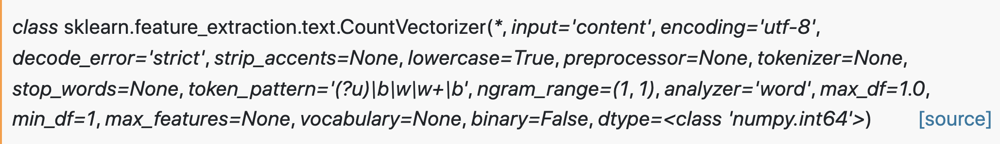
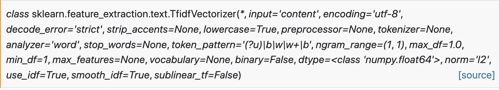

sklearn¶
CountVectorizer¶
Q2. What are the default parameters?

from sklearn.feature_extraction.text import CountVectorizer
STEPS
# initialize
vectorizer = CountVectorizer()
# generate word counts
X = vectorizer.fit_transform(corpus)
Practice with Google Colab:
from sklearn.feature_extraction.text import CountVectorizer
corpus = [
'This is the first document.',
'This document is the second document.',
'And this is the third one.',
'Is this the first document?',
]
vectorizer = CountVectorizer()
X = vectorizer.fit_transform(corpus)
vectorizer.get_feature_names_out()
array(['and', 'document', 'first', 'is', 'one', 'second', 'the', 'third',
'this'], ...)
print(X.toarray())
[[0 1 1 1 0 0 1 0 1]
[0 2 0 1 0 1 1 0 1]
[1 0 0 1 1 0 1 1 1]
[0 1 1 1 0 0 1 0 1]]
Q2. What are the feature names in row0: [0 1 1 1 0 0 1 0 1]?
TfIdf Vectorizer¶
We can use Transformer for TF or Tf-Idf
Q2. How to set up TF (instead of Tf-Idf)?

rom sklearn.feature_extraction.text import TfidfVectorizer
STEPS for TF
vectorizer = TfidfVectorizer(use_idf=False)
X = vectorizer.fit_transform(corpus)
STEPS for TF-IDF
vectorizer = TfidfVectorizer()
X = vectorizer.fit_transform(corpus)
Practice with Google Colab
from sklearn.feature_extraction.text import TfidfVectorizer
corpus = [
'This is the first document.',
'This document is the second document.',
'And this is the third one.',
'Is this the first document?',
]
vectorizer = TfidfVectorizer()
X = vectorizer.fit_transform(corpus)
vectorizer.get_feature_names_out()
array(['and', 'document', 'first', 'is', 'one', 'second', 'the', 'third',
'this'], ...)
print(X.shape)
Smoothing
TfidfTransformer is the smooth_idf:
smooth_idf : boolean, default=True
Smooth idf prevents zero divisions and adds one to document frequencies, as if an extra document was seen containing every term in the collection exactly once.
https://towardsdatascience.com/tf-idf-explained-and-python-sklearn-implementation-b020c5e83275
Practice Google Colab
https://colab.research.google.com/drive/1eo75oo80vSFdvfrooxNpWawCWGNAwYao?usp=sharing